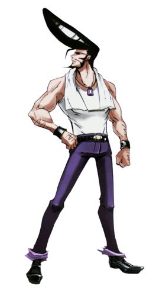

Рюноскэ Умэмия[3] (梅宮 竜之介, Umemiya Ryūnosuke), Бокуто Рю[4] (木刀の 竜, Bokutō no Ryū) — главарь банды «Загнанные в угол». Вместе с Тамао Тамамурой основал Союз Западного Токио. Работает шеф-поваром в Фумбари Онсэн.